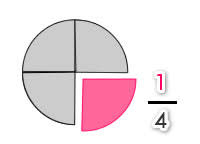
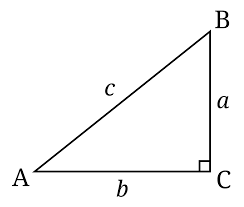

una fracción, número fraccionario, o numero racional , es la expresión de una cantidad dividida entre otra cantidad; es decir que representa un cociente no efectuado de 2 números. Las fracciones, como se observan en la imagen , comunes se componen de: numerador, denominador y línea divisora entre ambos (barra horizontal u oblicua). En una fracción común a/b el denominador "b" expresa la cantidad de partes iguales que representan la unidad y no puede ser 0 , y el numerador "a" indica cuántas de ellas se toman.

El conjunto matemático que contiene a las fracciones de la forma a/b, donde a y b son números enteros y b \not = 0 es el conjunto de los números racionales, denotado como \mathbb{Q}.
Toda fracción es una división y toda división es una fracción. Debido a eso una división se puede convertir en una fracción para ser simplificada.
Las fracciones pueden ser representadas como num\div denom, num\/denom o \frac{num}{denom} en una operación matemática.
Dado que las fracciones, el conjunto \mathbb{Q}, son una extensión de los números previamente estudiados (conjuntos \mathbb{N} y \mathbb{Z}), se pueden realizar las mismas operaciones, es decir, , ,, , , y .
Simplificar una fracción consiste en reducir tanto el numerador como el denominador en iguales proporciones hasta llevarlo a su mínima expresión. Para esto, se deben descomponer en su base y simplificar, eliminar, los números que sean iguales en numerador y denominador. Ejemplo: \frac{21}{9} = \frac{factores(21)}{factores{9}} = \frac{7\times \colorbox{Thistle}{3} }{\colorbox{Thistle}{3}\times3} = \frac{7}{3} \frac{154}{22} = \frac{factores(154)}{factores{22}} = \frac{\colorbox{Thistle}{2}\times7\times\colorbox{Thistle}{11}}{\colorbox{Thistle}{2}\times\colorbox{Thistle}{11}} = \frac{7}{1}=7 \frac{6}{8} = \frac{factores(6)}{factores{8}} = \frac{\colorbox{Thistle}{2}\times3}{\colorbox{Thistle}{2}\times2\times2} = \frac{3}{4}
Los 0 a la izquierda se pueden eliminar dividiendo entre 10 tantas veces sea posible: \frac{10}{200} = \frac{1\times\colorbox{Thistle}{10}}{2\times\colorbox{Thistle}{10}\times10} = \frac{1}{20}
La suma y la resta entre fracciones puede dividirse en 2 posibilidades:
Los denominadores son iguales En este caso, se deja el mismo denominador y se suman o restan, dependiendo del signo y la operación, los numeradores. Se emplean las mismas reglas con respecto a los signos. Ejemplos:
Suma de fracciones \frac{7}{5} + \frac{19}{5} = \frac{7+19}{5} = \frac{26}{5}
Resta de fracciones \frac{7}{5} - \frac{19}{5} = \frac{7-19}{5} = \frac{-12}{5} Recordemos que cuando se restan números pueden haber resultados negativos.
Suma de fracciones (signos distintos) \frac{10}{9} + \frac{-8}{9} = \frac{10 + (-8)}{9} = \frac{2}{9} Cabe resaltar que siempre hay que tener en cuenta los signos.
Suma algebraica, varias funciones \frac{7}{8} + \frac{-5}{8} - \frac{-9}{8} + \frac{10}{8} = \frac{7+(-5)-(-9)+10}{8} = \frac{21}{8}
Los denominadores son diferentes Cuando esto pasa, hay que llevar las fracciones a un denominador común, para de esta forma aplicar lo que ya vimos. Esto se puede hacer de 2 formas, consiguiendo el mínimo común múltiplo (mcm) o haciendo una operación “cruzada" y luego multiplicamos el numerador por el mismo numero que multiplicamos el denominador de esa fracción. Ejemplos:
Suma de fracciones con distinto denominador
mcm: \begin{aligned} &\frac{5}{3} + \frac{10}{9}\\ &buscamos\ el\ M.C.M:\\ &M.C.M(3) = 3\ \&\ M.C.M(9) = 3^2 \Rightarrow M.C.M(3;9) = 3^2\\ &\frac{5\times3}{3\times3} + \frac{10\times1}{9\times1} = \frac{5\times3+10}{9} = \frac{25}{9} \end{aligned}
cruzado: En este método se multiplican directamente los denominadores para crear el nuevo denominador y luego se multiplican los numeradores por los denominadores opuestos. \begin{aligned} &\frac{5}{3} + \frac{10}{9}\\ &numerador\ 1 = \frac{5}{3} \searrow \frac{10}{9} = 5\times9 = 45\\ &numerador\ 2 = \frac{5}{3} \nearrow \frac{10}{9} = 3\times10 = 30\\ &denominador = \frac{5}{3} \rightarrow \frac{10}{9} = 3\times9 = 27\\ &\frac{5\times9}{3\times9} + \frac{10\times3}{9\times3} = \frac{45+30}{27} = \frac{75}{27} \end{aligned}
Nota: aunque las fracciones se vean diferentes, tienen el mismo valor, a estas se les conoce como fracciones equivalentes y se puede comprobar fácilmente al ver que 25\times3=75 y 3\times9=27.
Para comparar 2 fracciones se de deben tomar en cuenta tanto el numerador como el denominador. Primero se debe asegurar que el denominador sea el mismo y luego comparar los numeradores. Para esto se puede usar cualquiera de los métodos vistos en la suma (M.C.M o cruzado).
La forma mas rápida de hacerlo es con el método de el cruzado de la suma, dado que solo hay que conseguir los numeradores, ya que estos métodos (también aplica con el M.C.M) aseguran un denominador común. Ejemplo: \begin{aligned} &\frac{5}{3}\ ;\ \frac{10}{9}\\ &numerador\ 1 = \frac{5}{3} \searrow \frac{10}{9} = 5\times9 = 45\\ &numerador\ 2 = \frac{5}{3} \nearrow \frac{10}{9} = 3\times10 = 30\\ &\Rightarrow como\ 45>30\ \frac{5}{3} > \frac{10}{9} \end{aligned}
La multiplicación se hace de forma lineal, es decir, se multiplican los numeradores para obtener el numerador y los denominadores para obtener el denominador. Ejemplos:
Multiplicación \frac{7}{5} \times \frac{6}{11} = \frac{7\times6}{5\times11} =\frac{42}{55} \frac{5}{3} \times \frac{10}{9} = \frac{5\times10}{3\times9} =\frac{50}{27}
La división se puede hacer de dos formas:
Invirtiendo el denominador
en este caso, se invierte la fracción del denominador (el numerador pasa a ser el denominador y el denominador al numerador) y se multiplica por esta. Ejemplos:
\frac{7}{5}\div \frac{6}{11} = \frac{7}{5} \times \frac{11}{6} = \frac{7\times11}{5\times6} =\frac{77}{30} \frac{5}{3} \times \frac{10}{9} = \frac{5}{3} \times \frac{9}{10} = \frac{5\times9}{3 \times10} =\frac{45}{30}
Doble C
Se coloca el denominador debajo del numerador de forma que queden 4 números verticales, los extremos se multiplican para dar el numerador y los internos se multiplican y dan como resultado el denominador. Ejemplos:
\frac{7}{5}\div \frac{6}{11} = \frac{\displaystyle \frac{\colorbox{SkyBlue}{7}}{\colorbox{Thistle}{5}}}{\displaystyle \frac{\colorbox{Thistle}{6}}{\colorbox{SkyBlue}{11}}} =\frac{\colorbox{SkyBlue}{$7\times11$}}{\colorbox{Thistle}{$5\times6$}} =\frac{77}{30}
\frac{5}{3} \times \frac{10}{9}= \frac{\displaystyle \frac{\colorbox{SkyBlue}{5}}{\colorbox{Thistle}{3}}}{\displaystyle \frac{\colorbox{Thistle}{10}}{\colorbox{SkyBlue}{9}}} = \frac{\colorbox{SkyBlue}{$5\times9$}}{\colorbox{Thistle}{$3\times10$}} =\frac{45}{30}
Una fracción puede tener potencia en su numerador, denominador, ambos o un exponente común para ambos. En el caso de que sea en el numerador o denominador, se resuelve como se acostumbra. Si la potenciación se aplica a ambos elementos, esta se puede dividir, es decir la potencia de una fracción es igual a la potencia del numerador entre la del denominador y con estos se procede de la misma forma que para los conjuntos previamente estudiados, y tienen las mismas propiedades. Ejemplos:
Potencia en el numerador \frac{5^3}{9} = \frac{5\times5\times5}{9} =\frac{125}{9}
Potencia en el denominador \frac{5}{3^4} = \frac{5}{3\times3\times3\times3} =\frac{5}{81}
Potencias distintas en numerador y denominador \frac{5^3}{3^4} = \frac{5\times5\times5}{3\times3\times3\times3} = \frac{125}{81}
Potencia afectando a numerador y a denominador \left(\frac{4}{3}\right)^2 = \frac{4^2}{3^2} = \frac{16}{9}
Hay que resaltar que la operación opuesta puede realizarse también, es decir, si el numerador y el denominador tienen la misma potencia, se puede colocar una única potencia que afecte a toda la fracción.
\frac{2^3}{5^3} = \left(\frac{2}{5}\right)^3 \frac{2^{4\times2}}{5^{3\times2}} = \left(\frac{2^4}{5^3}\right)^2
Una fracción puede contener radicales en su numerador, denominador, ambos o una raíz en común para ambos, y se procede de la misma forma que con la potencia pero siendo este caso una raíz. Si el denominador contiene radicales, puede ser de gran ayuda racionalizar estos, especialmente si se van a realizar operaciones, tales como la adición o la comparación de una fracción con otra. Es también conveniente si la división tiene que realizarse explícitamente. Para racionalizar necesitamos elevar la raíz al mismo termino que esta (2 si es cuadrada, 3 si es cubica, etc), esto se consigue al multiplicar tanto el numerador como el denominador por la raíz que se quiera eliminar, tantas veces como sea necesario (como ya hay 1, seria 1 si es cuadrática, 2 si es cubica, etc). ejemplos:
Nota: una raíz puede ser expresada como una potencia fraccionaria, de esta forma se pueden facilitar cálculos. \displaystyle \sqrt{a} = a^{\frac{1}{2}},\ \sqrt[3]{a} = a^{\frac{1}{3}},\ \cdots,\ \sqrt[n]{a}=a^{\frac{1}{n}}
Raíz en el numerador \frac{\sqrt{9}}{5} = \frac{3}{5}
Raíz en el denominador \frac{5}{\sqrt{4}} = \frac{5}{2}
Raíz distintas en numerador y denominador \frac{\sqrt[3]{27}}{\sqrt{4}} = \frac{3}{2}
Raíz afectando a numerador y a denominador \sqrt{\frac{4}{25}} = \frac{\sqrt{4}}{\sqrt{25}} = \frac{2}{5}
Racionalización
\frac{3}{\sqrt{7}} =\frac{3}{\sqrt{7}} \frac{\sqrt{7}}{\sqrt{7}} = \frac{3\times \sqrt{7}}{\sqrt{7}\times\sqrt{7}} = \frac{3\times \sqrt{7}}{7}
\frac{3}{\sqrt[3]{7}} =\frac{3}{\sqrt[3]{7}} \left(\frac{\sqrt[3]{7}}{\sqrt[3]{7}}\right)^2 = \frac{3\times (\sqrt[3]{7})^2 }{\sqrt[3]{7}\times(\sqrt[3]{7})^2} = \frac{3\times (\sqrt[3]{7})^2}{7}
Las propiedades de el conjunto \mathbb{Q}, las mismas que en \mathbb{N} y \mathbb{Z}, siendo estas extrapoladas a fracciones.
Nota: Todo numero entero puede escribirse como fracción, la forma mas simple es colocarle un denominador de 1: \begin{aligned} 10=\frac{10}{1} \hspace*{1cm} 4431 &= \frac{4431}{1}\hspace*{1cm} -75=\frac{-75}{1} \\ \text{y mas general, con letras: } A &= \frac{A}{1}\ ;\ A\in \mathbb{Z} \end{aligned}
Sean \displaystyle \frac{A}{J},\ \frac{B}{K},\ \frac{C}{L} fracciones cualquiera.
Propiedad Conmutativa Tanto para la suma como la multiplicación se cumple que:
Aditiva: \frac{A}{J} +\frac{B}{K} = \frac{B}{K} +\frac{A}{J}
\frac{3}{2} +\frac{1}{5} = \frac{17}{10} = \frac{1}{5} +\frac{3}{2}
Multiplicativa: \frac{A}{J} \times\frac{B}{K} = \frac{B}{K} \times\frac{A}{J}
\frac{3}{2} \times\frac{1}{5} = \frac{3}{10} = \frac{1}{5} \times\frac{3}{2}
Propiedad Asociativa Tanto para la suma como la multiplicación se cumple que:
Aditiva: \frac{A}{J}+\left(\frac{B}{K}+\frac{C}{L}\right)=\left(\frac{A}{J}+\frac{B}{K}\right)+\frac{C}{L}
\begin{aligned} \frac{5}{3} +\left(\frac{1}{8} +\frac{7}{6}\right) &=\left( \frac{5}{3} +\frac{1}{8}\right) +\frac{7}{6}\\ \frac{5}{3} +\frac{1\times6+7\times8}{8\times6} &= \frac{5\times8+1\times3}{3\times8}+\frac{7}{6}\\ \frac{5}{3} + \frac{62}{48} &= \frac{43}{24} +\frac{7}{6} \\ \frac{5\times48+62\times3}{48\times3} &= \frac{43\times6+7\times24}{24\times6} \\ \frac{426}{144} &= \frac{426}{144} \end{aligned}
Multiplicativa: \frac{A}{J}\times\left(\frac{B}{K}\times\frac{C}{L}\right)=\left(\frac{A}{J}\times\frac{B}{K}\right)\times\frac{C}{L}
\begin{aligned} \frac{5}{3}\times \left(\frac{1}{8}\times \frac{7}{6}\right) &=\left( \frac{5}{3}\times \frac{1}{8}\right)\times \frac{7}{6}\\ \frac{5}{3} \times \frac{1\times7}{8\times6} &= \frac{1\times5}{8\times3} \times \frac{7}{6} \\ \frac{5}{3} \times \frac{7}{48} &= \frac{5}{24} \times \frac{7}{6} \\ \frac{5\times7}{3\times48} &= \frac{5\times 7}{24\times6} \\ \frac{35}{144} &= \frac{35}{144} \end{aligned}
Propiedad distributiva se cumple que:
\frac{A}{J}\times\left(\frac{B}{K}+\frac{C}{L}\right)=\left(\frac{A}{J}\times\frac{B}{K}\right)+\left(\frac{A}{J}\times\frac{C}{L}\right) \begin{aligned} \frac{1}{7}\times\left(\frac{2}{3}+\frac{4}{5}\right)&=\left(\frac{1}{7}\times\frac{2}{3}\right)+\left(\frac{1}{7}\times\frac{4}{5}\right)\\ \frac{1}{7} \times \frac{2\times5+4\times3}{3\times5} &= \left(\frac{1\times2}{7\times3} \right)+\left(\frac{1\times4}{7\times5} \right) \\ \frac{1}{7} \times \frac{22}{15} &= \frac{2}{21} + \frac{4}{35} \\ \frac{1\times22}{7\times15} &= \frac{2\times35+4\times21}{21\times35} \\ \frac{22}{105} &= \frac{154}{735} \\ \end{aligned} aunque los resultados parezcan diferentes, se puede observar que son fracciones equivalentes ya que 22\times7=154 y 105\times7=735
Elemento neutro de la suma Este sigue siento el numero 0, ya que al sumarlo queda igual.
\frac{A}{J} + 0 = \frac{A}{J}
\frac{57}{3} + 0 = \frac{57}{3}
Elemento neutro de la multiplicación Este es el 1 ya que cualquier numero multiplicado por 1 sigue siendo el mismo
\frac{A}{J} \times 1 = \frac{A}{J}
\frac{28}{9} \times 1 = \frac{28}{9}
Como se ha observado, una fracción representa una cantidad especifica. Y por ende, las fracciones equivalentes son aquellas que expresan el mismo número, o cantidad, aunque el numerador y denominador de estas sean distintas. Esto es posible ya que, si se multiplica, o divide, el numerador y denominador de una fracción por el mismo numero, se obtiene una nueva forma de describir la misma cantidad original. (esto es ya que al multiplicar el numerador y el denominador por una misma cantidad, es equivalente a multiplicarlo por 1) 5\div5 = 1,\ 485\div485 = 1, -4684\div-4684 = 1 \rightarrow n\div n=1 Ejemplos:
\frac{3}{5} =\frac{3\times4}{5\times4} = \frac{12}{20} \frac{-95}{3} = \frac{-95\times2}{3\times2} =\frac{190}{6} \frac{451}{9} = \frac{451\times3}{9\times3} = \frac{1353}{27} \vdots \frac{A}{B} = \frac{A\times N}{B\times N}\ ;\ con \{A,B,N \} \in \mathbb{Z}
Por lo tanto, para conseguir una fracción equivalente solo hace falta multiplicar el numerador y el denominador, de la función dada, por un numero cualquiera.
La fracción generatriz es aquella que da como resultado un número decimal, ya sea exacto o periódico, mediante una fracción irreducible, es decir, donde el numerador y el denominador no tienen divisores en común, de manera que la fracción no se puede simplificar en números más pequeños. Para encontrar la fracción generatriz de una expresión en particular se debe distinguir en 3 casos:
el numero es decimal exacto. Tomamos el número sin la coma decimal y lo dividimos entre diez elevado al número de decimales, y luego simplificamos la fracción. Ejemplos: 0,46 = \frac{46}{10^2}=\frac{46}{100}=\frac{ \colorbox{Thistle}{2}\times 23}{50\times \colorbox{Thistle}{2}} \frac{23}{50} 1,125 = \frac{1125}{10^3}=\frac{1125}{1000}=\frac{3^2\times\colorbox{Thistle}{$5^3$}}{2^3\times\colorbox{Thistle}{$5^3$}}=\frac{9}{8} 2,4=\frac{24}{10}= \frac{3\times2\times2\times \colorbox{Thistle}{2}}{5\times \colorbox{Thistle}{2}} = \frac{12}{5}
El numero es periódico puro. Tomamos el número sin la coma decimal, usando una única vez el periodo, y le restamos la parte entera. Luego, al resultado lo dividimos entre un número que tenga tantos nueves como cifras tiene el periodo, y finalmente simplificamos hasta hallar la fracción irreductible. 1,\widehat{5} =\frac{15-1}{9} =\frac{14}{9} 4,\widehat{789}=\frac{4789-4}{999} =\frac{4785}{999}=\frac{1595\times \colorbox{Thistle}{3}}{333\times \colorbox{Thistle}{3}} = \frac{1595}{333} 11,\widehat{45}=\frac{1145-11}{99}=\frac{1134}{99}=\frac{2\times \colorbox{Thistle}{$3^4$}\times7}{ \colorbox{Thistle}{$3^2$}\times 11} =\frac{2\times3^2\times7}{11} =\frac{126}{11}
El numero es periódico mixto. Tomamos el número, sin la coma decimal y repitiendo el periodo solo una vez. A este le restamos el numero formado por la parte entera y la no periódica. Dividimos el resultado entre tantos 9 como el periodo y tantos 0 como la parte decimal. 1,2\widehat{31} = \frac{1231-12}{990}= \frac{1219}{990} 31,42\widehat{5}=\frac{31425-3142}{900} =\frac{28283}{900} 0.4\widehat{243}=\frac{4243-4}{9990}=\frac{4239}{9990} =\frac{157\times \colorbox{Thistle}{$3^3$}}{2\times5\times37\times \colorbox{Thistle}{$3^3$}}= \frac{157}{2\times5\times37}= \frac{157}{370}
Cabe resaltar que: de manera más general, se puede extender el concepto de fracción a un cociente cualquiera de expresiones matemáticas (no necesariamente números), dando origen a funciones, ecuaciones y, permitiendo de esta forma, modelar todo tipo de fenómenos físicos.
La notación científica es una forma de escribir números muy grandes o muy pequeños de forma mas sencilla y eficiente. Para esto, se utilizan las propiedades de la potenciación, y que si se multiplica por una potencia de 10 se mueve la coma decimal, si la potencia de 10 es >0 se mueve hacia la derecha, y si es <0, se mueve hacia la izquierda.
La idea de la notación científica es escribir el numero resultante de forma Normalizada, es decir con un numero distinto de 0 como unidad, luego la coma decimal, el resto de números en el mismo orden que se encontraban (si a partir de un punto solo quedan 0 a la derecha no se colocan), y luego “\times 10^{exp}" donde “exp" seria el numero de veces que se corrió la coma.
se quiere llevar desde un numero sin potencia hacia la forma unidad, decimales \times10^{exp}. Para esto se debe:
Conseguir el dígito mas significativo ya que este sera la nueva unidad, único dígito de la parte entera, este es el dígito mas a la izquierda que sea distinto de 0. Ejemplos: \begin{aligned} 235,39\ MSD&= 2\\ 0,12\ MSD&=1 \\0,00000924\ MSD&=9 \\ -4500000\ MSD &=4\\ 1507800,2\ MSD &=1 \end{aligned}
Conseguir el signo, este es el mismo que el del numero.
Conseguir la nueva parte decimal. Esta esta conformada por todos los dígitos a la derecha del MSD, este se consiguió en el paso 1. Cabe resaltar que si estos son todos 0, o a partir de cierto punto todos los números hacia la derecha son 0, se omitirán. Ejemplos:
\begin{aligned} 235,39\ decimal= &3539\\ 0,12\ decimal=&2\\ 0,00000924\ decimal=&24\\ -4500000\ decimal=&5\\1507800,2\ decimal=&5078002 \end{aligned}
Calcular el exponente. Esta compuesto en 2 partes, el signo y el valor.
El signo sera:
+ si el MSD esta a la izquierda de la coma “,"
- si el MSD esta a la derecha de la coma “,"
El valor sera: la cantidad de espacios, números, que se tiene que correr el MSD hasta llegar a ser el único dígito a la izquierda de la coma “,"
Ejemplos: \begin{aligned} 2 \colorbox{Thistle}{35},39\ exp=&+2\\ \colorbox{Thistle}{0},12\ exp=&-1\\ \colorbox{Thistle}{0,000\ 00}924\ exp=&-6\\ -4 \colorbox{Thistle}{500\ 000}\ exp=&+6\\1 \colorbox{Thistle}{507800},2\ exp=&+6 \end{aligned}
Finalmente: 235,39=2,3539 \times10^{2} 0,12 = 1,2 \times10^{-1} 0,000\ 009\ 24 = 9,24 \times10^{-6} -4\ 500\ 000 = -4,5 \times10^{6} 1\ 507\ 800,2 = 1,507\ 800\ 2 \times10^{6}
se quiere llevar desde la forma unidad, decimales \times10^{exp} hacia un numero sin potencia. Para esto se debe correr la coma tantas veces lo diga el exponente y de acuerdo al signo, si es positivo( +, exp>0) hacia la derecha, si es negativo (-, exp<0) hacia la izquierda. Cuando no hay mas elementos a la derecha o izquierda(respectivamente del signo del exponente) después de la coma se completa con 0 (ceros).
nota: para ayudar a recordar hacia donde se mueve la coma, es útil usar el menor o mayor como la punta de una flecha, así se tiene que: -5<0 entonces hacia la izquierda y 5>0 entonces hacia la derecha.
2,3539 \times10^{2}= 2,\colorbox{Thistle}{35}39 = 235,39 1,2 \times10^{-1} = 0\colorbox{Thistle}{1},2 = 0,12 9,24 \times10^{-6}=\text{Completamos con 0 a la izquierda: } 0\colorbox{Thistle}{000\ 009},24 =0,000\ 009\ 24 -4,5 \times10^{6}=\text{Completamos con 0 a la derecha: }-4,\colorbox{Thistle}{500\ 000}=-4\ 500\ 000 1,507\ 800\ 2 \times10^{6}= 1, \colorbox{Thistle}{507\ 800}\ 2= 1\ 507\ 800,2
Dato curioso: se usan potencias de 10 ya que esta es la base del sistema decimal, es decir, tenemos 10 posibles opciones para la unidad (\{0,1,2,3,4,5,6,7,8,9\}, en otros sistemas se utilizan potencias de la base para desplazar la coma, en binario potencias de 2, hexadecimal potencias de 16, etc.
En matemáticas, el teorema de Pitágoras es una relación fundamental en geometría euclidiana entre los tres lados de un triángulo rectángulo. Este teorema se puede escribir como una ecuación que relaciona las longitudes de los lados a, b y c, (catetos e hipotenusa) y a menudo se le llamada ecuación pitagórica y estipula que:
“En todo triangulo rectángulo, el cuadrado de la hipotenusa es igual a la suma de los cuadrados de los catetos".
Sean a,\ b los catetos y c la hipotenusa, como se observa en :
c^2 = a^2+b^2 y despejando para hipotenusa y cada cateto: c= \sqrt{a^2+b^2} a=\sqrt{c^2-b^2} b= \sqrt{c^2-a^2}

Recordemos: que la hipotenusa de todo triangulo es el lado mas grande y siempre esta opuesta al ángulo de 90°
La potenciación es una operación matemática entre 2 términos, base y exponente y se escribe de la forma: base^{exp}, la potenciación se puede aplicar a cualquier conjunto de números (\mathbb{N}, \mathbb{Z}, \mathbb{Q}, \mathbb{R}, \mathbb{C}) y consiste en:
Multiplicar tantas veces la base como lo indique el exponente
Cuando el exponente es 2 se le suele que esta elevado a cuadrado y al exponente 3 se le dice elevado al cubo y ante exponentes mayores se suele leer a la cuarta, quinta, etc potencia. O el numero esta elevado a cuatro, cinco, etc.
Nota: Cuando la base es un numero negativo, se encierra este entre paréntesis para evitar confusión, ya que el signo si afecta y se multiplica.
Es importante: saber que todo numero elevado a 0 tiene como resultado 1. ejemplos: 5^0=1,\ 5441^0=1,\ (-443148)^0=1,\ n^0 = 1, con n siendo distinto de 0. si la base y el exponente son ambos 0 la operación no esta definida, es decir 0^0 es indeterminado, no existe. Ejemplos:
\begin{aligned} 15^2 =& 15\times15 = 225\\ 6^4 =& 6\times6\times6\times6 = 1296\\ (-8)^3 =& -8\times-8\times-8 = -512\\ (-24)^2 =& -24\times-24= 576\\ \end{aligned}
De los ejemplos se observa que:
Los resultados de la potenciación crecen muy rápido, mientras mayor sea el exponente, mayor sera el valor absoluto del numero resultante siempre que la base sea distinta de 1 o 0.
todo numero elevado a 1 es el mismo numero.
Si la base es 1 el resultado siempre sera 1.
Todo numero elevado a una potencia par da resultado positivo
para las fracciones, se utiliza una propiedad de la potenciación, y se elevan tanto el numerador como el denominador al exponente común. Ejemplos:
\begin{aligned} \left(\frac{10}{8}\right)^3=& \frac{10^3}{8^3} = \frac{10\times10\times10}{8\times8\times8} = \frac{1000}{512}\\ \left(\frac{5}{3}\right)^{2} =& \frac{5^2}{3^2}= \frac{5\times5}{3\times3} = \frac{25}{9} \\ \left(\frac{-8}{7}\right)^{4} =& \frac{(-8)^4}{7^4}= \frac{-8\times-8\times-8\times-8}{7\times7\times7\times7} = \frac{4096}{2401} \\ \left(\frac{a}{b}\right)^{n} =& \frac{a^n}{b^n} \frac{a\times a\times \cdots\times a}{b\times b\times \cdots\times a} \end{aligned}
Como se menciono anteriormente, todo numero elevado a una potencia par da como resultado un numero positivo, además, es bueno recordar que un numero par tiene la forma 2\times N, con N \in \mathbb{Z} o dicho de otra forma, es divisible entre 2.
\begin{aligned} (-8)^{4} =& -8\times-8\times-8\times-8 =& 4096\\ 9^3=& 9\times9\times9 =& 729\\ (-864)^2 =& -864\times-864 = -746496\\ (-1)^88 =& -1\times-1\times-1\times \cdots \times -1 = 1 \end{aligned}
En este caso, todo numero elevado a potencia impar tendrá el mismo signo que la base. De nuevo, recordemos que un numero impar tiene la forma (2\times N)+1, es decir, no es divisible entre 2.
\begin{aligned} (-3)^3 =& -3\times-3\times-3 = -27\\ (-745)^1 =& -745\\ (-2)^{7} =& -2\times-2\times-2\times \cdots \times -2 = -128\\ (-1)^{97} =& -1\times -1\times-1\times\cdots\times -1 = -1\\ \end{aligned}
Un exponente negativo en una potencia implica que la base es una fracción con numerador 1 y denominador base, como el numerador es 1 el exponente solo afectara en el denominador y sera un numero positivo, es decir: A^{-n}= \frac{1}{A^n} Ejemplos:
\begin{aligned} 7^{-1} &= \frac{1}{7} \\ 5^{-4}& = \frac{1}{5^4} = \frac{1}{625} \\ (-4)^{-3} &= \frac{1}{(-4)^3} = \frac{1}{64} \\ 98^{-2} &= \frac{1}{98} \left(\frac{3}{4} \right)^{-2} = \frac{1}{\left(\frac{3}{4} \right)^{2}} =\frac{4^2}{3^2} = \frac{16}{9} \end{aligned}
Cuando se multiplican 2 o mas potencias de igual base, se deja la misma base y se suman los exponentes. Ejemplos:
\begin{aligned} 2^{10}\times2^5 =& 2^{10+5} = 2^{15} = 32768\\ 5^2\times5^{3} =& 5^{2+3} = 5^{5} =3125\\ 9 \times 9^2 =& 9^{1+2} = 9^3 = 729 \\ &\vdots\\ A^m\times A^n &= A^{m+n} \end{aligned}
Cuando se dividen 2 o mas potencias de igual base, se deja la misma base y se restan los exponentes. Ejemplos:
\begin{aligned} 2^{10}\div2^5 =& 2^{10-5} = 2^5 = 32\\ 5^2\div5^{2} =& 5^{2-2} = 5^{0} =1\\ 9^4 \div 9^2 =& 9^{4-2} = 9^2 = 81 \\ &\vdots\\ A^m\div A^n &= A^{m-n} \end{aligned}
La potencia de un producto es igual al producto de los operandos elevados al exponente original, esto es La potencia puede repartirse a los multiplicandos, (A\times B)^{n} = A^n \times B^n.
Se hace especial énfasis en que es en productos, esto no aplica ni en suma ni en restas, en esos casos se usan productos notables.
Ejemplos:
\begin{aligned} (3\times5)^2 =&3^2\times5^2= 9\times25=225 \\ (10\times(-3))^3 =& 10^3 \times (-3)^3 = 1000\times(-27) = -27000\\ (5\times4)^4 =&5^4\times4^4 = 625\times256= 160000 \end{aligned}
La potencia de un cociente es igual al cociente de los operandos elevados al exponente original, es decir, La potencia puede repartirse al numerador y al denominador. De nuevo se recuerda que LA POTENCIA NO SE PUEDE REPARTIR EN SUMA O RESTA, de presentarse una operación de ese estilo se aplica un producto notable (véase Referencesproducto-notable).
\left(\frac{A}{B}\right)^{n} = \frac{A^n}{B^n}
\begin{aligned} \left(\frac{2}{3}\right)^{3} =& \frac{2^3}{3^3}= \frac{8}{27} \\ \left(\frac{7}{5}\right)^{2} =& \frac{7^2}{5^2} =\frac{49}{25} \\ \left(\frac{8}{9}\right)^{4} =&\frac{8^4}{9^4} = \frac{4096}{6561}\\ \left(\frac{-1}{2}\right)^{10} =& \frac{(-1)^10}{2^10} = \frac{1}{1024} \end{aligned}
La potencia de una potencia es igual a una nueva potencia, esta tiene como base la original y como exponente el producto de los dos exponentes de la original. De esta forma: (B^{exp1})^{exp2} = B^{exp1\times exp2} donde B es la base y exp1, exp2 los exponentes.
\begin{aligned} \left(5^2\right)^{3} =& 5^{2\times3}= 5^6 =15625 \\ \left(7^2\right)^{2} =& 7^{2\times2}= 7^4 =2401 \\ \left(2^3\right)^{4} =& 2^{3\times4}=2^12 = 4096\\ \left(\left(\frac{-1}{2}\right)^{5}\right)^2 =&\left(\frac{-1}{2}\right)^{2\times5}= \left(\frac{-1}{2}\right)^{10}=\frac{(-1)^{10}}{2^{10}} = \frac{1}{1024} \end{aligned}
Un exponente racional implica que el numero que es el exponente pertenece al conjunto \mathbb{Q}, es una fracción. De este tipo de expresiones es que se crearon las raíces, ya que son un caso particular del mismo (cuando el numerador es 1), esto significa que: A^\frac{1}{den} = \sqrt[den]{A}
Por otro lado, el numerador actúa como un exponente normal, siendo la expresión general:
A^{\frac{num}{den} } = \sqrt[den]{A^{num}}
Ejemplos:
\begin{aligned} 10^{\frac{1}{4}} &= \sqrt[4]{10} \\ 5^{\frac{2}{3} } &= \sqrt[3]{5^2} = \sqrt[3]{25} \\ 44^{\frac{-2}{5} }&= \frac{1}{44^{\frac{2}{5}}} = \frac{1}{ \sqrt[5]{44^2} }= \frac{1}{ \sqrt[5]{1936} } \\ (-3)^{\frac{4}{5}} &= \sqrt[5]{(-3)^4} = \sqrt[5]{81} \end{aligned}
La potencia 0^0 es una potencia indeterminada, es decir no existe, para referirse a este tipo de resultados se dice que presenta una forma indeterminada 0^0.
Como dato curioso: Existen otras formas indeterminadas por ejemplo \frac{0}{0}, \frac{\infty}{\infty} los cuales se estudian en cursos universitarios y superiores con limites.
Cabe resaltar: que es posible encontrarse mas de una propiedad en la misma potencia, y para resolverla basta con aplicar las propiedades que hagan falta, paso a paso.